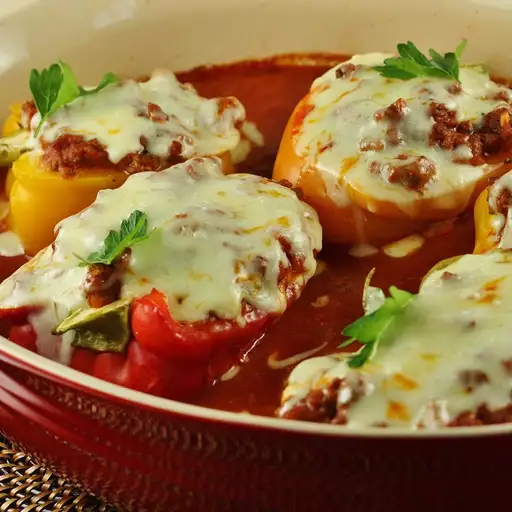

Lasagna Pepper Boats

Ingredients
- 6 green bell peppers, halved and seeded
- salt to taste
- water as needed
- 1 pound ground beef
- 3 (8 ounce) cans tomato sauce
- 1 (6 ounce) can tomato paste
- 1 teaspoon salt
- ½ teaspoon dried oregano
- ground black pepper to taste
- 1 (12 ounce) container cottage cheese
- 2 cups shredded mozzarella cheese
- 1 cup shredded Cheddar cheese
Directions
- Preheat oven to 350 degrees F (175 degrees C).
- Arrange bell peppers, cut-side up, in a 10x15-inch baking dish; season with salt. Pour enough water into dish to make 1/4-inch depth.
- Heat a large skillet over medium-high heat. Cook and stir beef in the hot skillet until browned and crumbly, 5 to 7 minutes; drain and discard grease. Add tomato sauce, tomato paste, 1 teaspoon salt, oregano, and black pepper to ground beef; bring to a boil. Reduce heat and simmer until flavors blend, about 15 minutes.
- Fill each bell pepper with a heaping tablespoon cottage cheese; top with a layer of mozzarella cheese, a layer of Cheddar cheese, and meat sauce. Sprinkle each 'boat' with more mozzarella cheese and Cheddar cheese.
- Bake in the preheated oven until peppers are tender and cheeses are melted, 50 to 65 minutes.
Notes
You can substitute ricotta cheese for cottage cheese if you prefer and sprinkle with Parmesan cheese if you like.